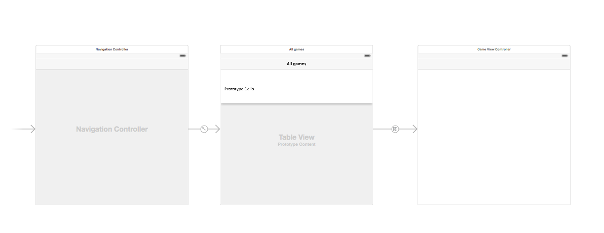
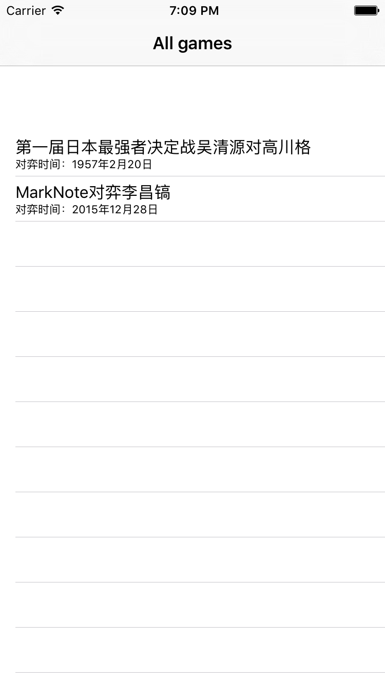

用Swift写围棋App－03搭架子
tags: Apps, 开发随笔
基本上，我的构思是这样的：
A: 应用启动后，进入一个棋谱列表，可以看到一些可用的棋谱；
B: 每一个棋谱，会有一个标题，比如“第一届日本最强者决定战吴清源对高川格”，还有一些小字说明额外的信息，比如“对弈时间：1957年2月20日”；
C: 用户选中一行后，应用会加载相应的棋谱；
从这个设想来看，一个典型的UINavigatioController + UITableView似乎可以构成主要的UI。
打开Main.stroyboard，选中之前Xcode自动创建的那个ViewController，在菜单中找到Editor->Embed In -> Navigation Controller。
在这个ViewController上拖一个UITableView;
再在StoryBorad中加入一个新的UIViewController;
在 UITableView中选中ContentView，按住control + command键，拖到新的ViewController上，建一个Show的Segue。
将XCode创建的ViewController改名叫HomeViewController，就是步骤A的界面了。
然后新建一个UIViewController的子类，命名为GameViewController，就是用来在步骤C中加载棋谱的了。
现在的Stroyboard是这个样子的：

运行一下，执行成功，界面是空的。
接下来，让我们弄点测试数据，让界面丰满起来。
建一个新的Swift类，命名为GameInfo，代码如下：
import Foundation
class GameInfo: NSObject {
var title: String = ""
var metaInfo: String = ""
}
然后在HomeViewController中敲入如下代码：
import UIKit
public class HomeViewController: UIViewController, UITableViewDataSource, UITableViewDelegate {
var _games:[GameInfo] = [GameInfo]()
@IBOutlet weak var _tblGames:UITableView!
override public func viewDidLoad() {
super.viewDidLoad()
let game1 = GameInfo()
game1.title = "第一届日本最强者决定战吴清源对高川格"
game1.metaInfo = "对弈时间：1957年2月20日"
_games.append(game1)
let game2 = GameInfo()
game2.title = "MarkNote对弈李昌镐"
game2.metaInfo = "对弈时间：2015年12月28日"
_games.append(game2)
_tblGames.delegate = self
_tblGames.dataSource = self
}
@objc public func tableView(tableView: UITableView, numberOfRowsInSection section: Int) -> Int {
return _games.count
}
@objc public func tableView(tableView: UITableView, cellForRowAtIndexPath indexPath: NSIndexPath) -> UITableViewCell {
let row = indexPath.row
let game = _games[row]
let cell = _tblGames.dequeueReusableCellWithIdentifier("GameCell", forIndexPath: indexPath)
cell.textLabel?.text = game.title
cell.detailTextLabel?.text = game.metaInfo
return cell
}
}
注意，这里因为UITableViewDataSource, UITableViewDelegate是Objective-c中定义的，所以这个HomeViewController必须声明为public的。否则一堆错误。
修改完毕，运行是这个样子的：

看起来很好，将代码push到 github上
https://github.com/marknote/GoTao